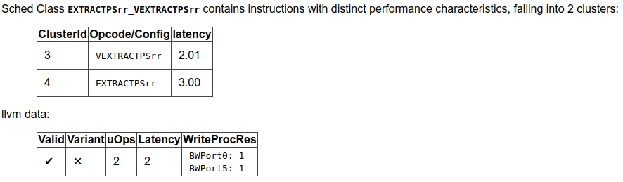

llvm-exegesis - LLVM Machine Instruction Benchmark¶
SYNOPSIS¶
llvm-exegesis [options]
DESCRIPTION¶
llvm-exegesis is a benchmarking tool that uses information available in LLVM to measure host machine instruction characteristics like latency, throughput, or port decomposition.
Given an LLVM opcode name and a benchmarking mode, llvm-exegesis generates a code snippet that makes execution as serial (resp. as parallel) as possible so that we can measure the latency (resp. inverse throughput/uop decomposition) of the instruction. The code snippet is jitted and, unless requested not to, executed on the host subtarget. The time taken (resp. resource usage) is measured using hardware performance counters. The result is printed out as YAML to the standard output.
The main goal of this tool is to automatically (in)validate the LLVM’s TableDef scheduling models. To that end, we also provide analysis of the results.
llvm-exegesis can also benchmark arbitrary user-provided code snippets.
SUPPORTED PLATFORMS¶
llvm-exegesis currently only supports X86 (64-bit only), ARM (AArch64 only, snippet generation is sparse), MIPS, PowerPC (PowerPC64LE only) and RISC-V (RV64I/E and RV32I/E) on Linux for benchmarking. Not all benchmarking functionality is guaranteed to work on every platform. llvm-exegesis also has a separate analysis mode that is supported on every platform that LLVM is.
To enable benchmarking in llvm-exegesis, LLVM must be configured and built with LLVM_ENABLE_LIBPFM enabled, as llvm-exegesis depends on libpfm4 for accessing performance counters. Benchmarking may fail if the target CPU is unsupported by libpfm. This can be verified by setting LIBPFM_VERBOSE and LIBPFM_DEBUG environment variables to enable verbose or debug mode for libpfm. If libpfm is installed in a non-standard directory, LLVM can be configured to locate the necessary library and header files by setting LIBRARY_PATH, C_INCLUDE_PATH, and CPLUS_INCLUDE_PATH environment variables. Additionally, LD_LIBRARY_PATH should be set so that llvm-exegesis can locate the libpfm library during execution.
SNIPPET ANNOTATIONS¶
llvm-exegesis supports benchmarking arbitrary snippets of assembly. However, benchmarking these snippets often requires some setup so that they can execute properly. llvm-exegesis has five annotations and some additional utilities to help with setup so that snippets can be benchmarked properly.
LLVM-EXEGESIS-DEFREG <register name> - Adding this annotation to the text assembly snippet to be benchmarked marks the register as requiring a definition. A value will automatically be provided unless a second parameter, a hex value, is passed in. This is done with the LLVM-EXEGESIS-DEFREG <register name> <hex value> format. <hex value> is a bit pattern used to fill the register. If it is a value smaller than the register, it is sign extended to match the size of the register.
LLVM-EXEGESIS-LIVEIN <register name> - This annotation allows specifying registers that should keep their value upon starting the benchmark. Values can be passed through registers from the benchmarking setup in some cases. The registers and the values assigned to them that can be utilized in the benchmarking script with a LLVM-EXEGESIS-LIVEIN are as follows:
Scratch memory register - The specific register that this value is put in is platform dependent (e.g., it is the RDI register on X86 Linux). Setting this register as a live in ensures that a pointer to a block of memory (1MB) is placed within this register that can be used by the snippet.
LLVM-EXEGESIS-MEM-DEF <value name> <size> <value> - This annotation allows specifying memory definitions that can later be mapped into the execution process of a snippet with the LLVM-EXEGESIS-MEM-MAP annotation. Each value is named using the <value name> argument so that it can be referenced later within a map annotation. The size is specified in a decimal number of bytes and the value is given in hexadecimal. If the size of the value is less than the specified size, the value will be repeated until it fills the entire section of memory. Using this annotation requires using the subprocess execution mode.
LLVM-EXEGESIS-MEM-MAP <value name> <address> - This annotation allows for mapping previously defined memory definitions into the execution context of a process. The value name refers to a previously defined memory definition and the address is a decimal number that specifies the address the memory definition should start at. Note that a single memory definition can be mapped multiple times. Using this annotation requires the subprocess execution mode.
LLVM-EXEGESIS-SNIPPET-ADDRESS <address> - This annotation allows for setting the address where the beginning of the snippet to be executed will be mapped in at. The address is given in hexadecimal. Note that the snippet also includes setup code, so the instruction exactly at the specified address will not be the first instruction in the snippet. Using this annotation requires the subprocess execution mode. This is useful in cases where the memory accessed by the snippet depends on the location of the snippet, like RIP-relative addressing.
LLVM-EXEGESIS-LOOP-REGISTER <register name> - This annotation specifies the loop register to use for keeping track of the current iteration when using the loop repetition mode. llvm-exegesis needs to keep track of the current loop iteration within the loop repetition mode in a performant manner (i.e., no memory accesses), and uses a register to do this. This register has an architecture-specific default (e.g., R8 on X86), but this might conflict with some snippets. This annotation allows changing the register to prevent interference between the loop index register and the snippet.
EXAMPLE 1: benchmarking instructions¶
Assume you have an X86-64 machine. To measure the latency of a single instruction, run:
$ llvm-exegesis --mode=latency --opcode-name=ADD64rr
Measuring the uop decomposition or inverse throughput of an instruction works similarly:
$ llvm-exegesis --mode=uops --opcode-name=ADD64rr
$ llvm-exegesis --mode=inverse_throughput --opcode-name=ADD64rr
The output is a YAML document (the default is to write to stdout, but you can redirect the output to a file using –benchmarks-file):
---
key:
opcode_name: ADD64rr
mode: latency
config: ''
cpu_name: haswell
llvm_triple: x86_64-unknown-linux-gnu
num_repetitions: 10000
measurements:
- { key: latency, value: 1.0058, debug_string: '' }
error: ''
info: 'explicit self cycles, selecting one aliasing configuration.
Snippet:
ADD64rr R8, R8, R10
'
...
To measure the latency of all instructions for the host architecture, run:
$ llvm-exegesis --mode=latency --opcode-index=-1
EXAMPLE 2: benchmarking a custom code snippet¶
To measure the latency/uops of a custom piece of code, you can specify the snippets-file option (- reads from standard input).
$ echo "vzeroupper" | llvm-exegesis --mode=uops --snippets-file=-
Real-life code snippets typically depend on registers or memory. llvm-exegesis checks the liveliness of registers (i.e. any register use has a corresponding def or is a “live in”). If your code depends on the value of some registers, you need to use snippet annotations to ensure setup is performed properly.
For example, the following code snippet depends on the values of XMM1 (which will be set by the tool) and the memory buffer passed in RDI (live in).
# LLVM-EXEGESIS-LIVEIN RDI
# LLVM-EXEGESIS-DEFREG XMM1 42
vmulps (%rdi), %xmm1, %xmm2
vhaddps %xmm2, %xmm2, %xmm3
addq $0x10, %rdi
Example 3: benchmarking with memory annotations¶
Some snippets require memory setup in specific places to execute without crashing. Setting up memory can be accomplished with the LLVM-EXEGESIS-MEM-DEF and LLVM-EXEGESIS-MEM-MAP annotations. To execute the following snippet:
movq $8192, %rax
movq (%rax), %rdi
We need to have at least eight bytes of memory allocated starting 0x2000. We can create the necessary execution environment with the following annotations added to the snippet:
# LLVM-EXEGESIS-MEM-DEF test1 4096 7fffffff
# LLVM-EXEGESIS-MEM-MAP test1 8192
movq $8192, %rax
movq (%rax), %rdi
EXAMPLE 4: analysis¶
Assuming you have a set of benchmarked instructions (either latency or uops) as YAML in file /tmp/benchmarks.yaml, you can analyze the results using the following command:
$ llvm-exegesis --mode=analysis \
--benchmarks-file=/tmp/benchmarks.yaml \
--analysis-clusters-output-file=/tmp/clusters.csv \
--analysis-inconsistencies-output-file=/tmp/inconsistencies.html
This will group the instructions into clusters with the same performance characteristics. The clusters will be written out to /tmp/clusters.csv in the following format:
cluster_id,opcode_name,config,sched_class
...
2,ADD32ri8_DB,,WriteALU,1.00
2,ADD32ri_DB,,WriteALU,1.01
2,ADD32rr,,WriteALU,1.01
2,ADD32rr_DB,,WriteALU,1.00
2,ADD32rr_REV,,WriteALU,1.00
2,ADD64i32,,WriteALU,1.01
2,ADD64ri32,,WriteALU,1.01
2,MOVSX64rr32,,BSWAP32r_BSWAP64r_MOVSX64rr32,1.00
2,VPADDQYrr,,VPADDBYrr_VPADDDYrr_VPADDQYrr_VPADDWYrr_VPSUBBYrr_VPSUBDYrr_VPSUBQYrr_VPSUBWYrr,1.02
2,VPSUBQYrr,,VPADDBYrr_VPADDDYrr_VPADDQYrr_VPADDWYrr_VPSUBBYrr_VPSUBDYrr_VPSUBQYrr_VPSUBWYrr,1.01
2,ADD64ri8,,WriteALU,1.00
2,SETBr,,WriteSETCC,1.01
...
llvm-exegesis will also analyze the clusters to point out inconsistencies in the scheduling information. The output is an html file. For example, /tmp/inconsistencies.html will contain messages like the following :

Note that the scheduling class names will be resolved only when llvm-exegesis is compiled in debug mode, else only the class id will be shown. This does not invalidate any of the analysis results though.
OPTIONS¶
- --help¶
Print a summary of command line options.
- --opcode-index=<LLVM opcode index>¶
Specify the opcode to measure, by index. Specifying -1 will result in measuring every existing opcode. See example 1 for details. Either opcode-index, opcode-name or snippets-file must be set.
- --opcode-name=<opcode name 1>,<opcode name 2>,...¶
Specify the opcode to measure, by name. Several opcodes can be specified as a comma-separated list. See example 1 for details. Either opcode-index, opcode-name or snippets-file must be set.
- --snippets-file=<filename>¶
Specify the custom code snippet to measure. See example 2 for details. Either opcode-index, opcode-name or snippets-file must be set.
- --mode=[latency|uops|inverse_throughput|analysis]¶
Specify the run mode. Note that some modes have additional requirements and options.
latency mode can be make use of either RDTSC or LBR. latency[LBR] is only available on X86 (at least Skylake). To run in latency mode, a positive value must be specified for x86-lbr-sample-period and –repetition-mode=loop.
In analysis mode, you also need to specify at least one of the -analysis-clusters-output-file= and -analysis-inconsistencies-output-file=.
- --benchmark-phase=[prepare-snippet|prepare-and-assemble-snippet|assemble-measured-code|measure]¶
By default, when -mode= is specified, the generated snippet will be executed and measured, and that requires that we are running on the hardware for which the snippet was generated, and that supports performance measurements. However, it is possible to stop at some stage before measuring. Choices are: *
prepare-snippet: Only generate the minimal instruction sequence. *prepare-and-assemble-snippet: Same asprepare-snippet, but also dumps an excerpt of the sequence (hex encoded). *assemble-measured-code: Same asprepare-and-assemble-snippet. but also creates the full sequence that can be dumped to a file using--dump-object-to-disk. *measure: Same asassemble-measured-code, but also runs the measurement.
- --x86-lbr-sample-period=<nBranches/sample>¶
Specify the LBR sampling period - how many branches before we take a sample. When a positive value is specified for this option and when the mode is latency, we will use LBRs for measuring. On choosing the “right” sampling period, a small value is preferred, but throttling could occur if the sampling is too frequent. A prime number should be used to avoid consistently skipping certain blocks.
- --x86-disable-upper-sse-registers¶
Using the upper xmm registers (xmm8-xmm15) forces a longer instruction encoding which may put greater pressure on the frontend fetch and decode stages, potentially reducing the rate that instructions are dispatched to the backend, particularly on older hardware. Comparing baseline results with this mode enabled can help determine the effects of the frontend and can be used to improve latency and throughput estimates.
- --repetition-mode=[duplicate|loop|min|middle-half-duplicate|middle-half-loop]¶
Specify the repetition mode. duplicate will create a large, straight line basic block with min-instructions instructions (repeating the snippet min-instructions/snippet size times). loop will, optionally, duplicate the snippet until the loop body contains at least loop-body-size instructions, and then wrap the result in a loop which will execute min-instructions instructions (thus, again, repeating the snippet min-instructions/snippet size times). The loop mode, especially with loop unrolling tends to better hide the effects of the CPU frontend on architectures that cache decoded instructions, but consumes a register for counting iterations. If performing an analysis over many opcodes, it may be best to instead use the min mode, which will run each other mode, and produce the minimal measured result. The middle half repetition modes will either duplicate or run the snippet in a loop depending upon the specific mode. The middle half repetition modes will run two benchmarks, one twice the length of the first one, and then subtract the difference between them to get values without overhead.
- --min-instructions=<Number of instructions>¶
Specify the target number of executed instructions. Note that the actual repetition count of the snippet will be min-instructions/snippet size. Higher values lead to more accurate measurements but lengthen the benchmark.
- --loop-body-size=<Preferred loop body size>¶
Only effective for -repetition-mode=[loop|min]. Instead of looping over the snippet directly, first duplicate it so that the loop body contains at least this many instructions. This potentially results in loop body being cached in the CPU Op Cache / Loop Cache, which allows to which may have higher throughput than the CPU decoders.
- --max-configs-per-opcode=<value>¶
Specify the maximum configurations that can be generated for each opcode. By default this is 1, meaning that we assume that a single measurement is enough to characterize an opcode. This might not be true of all instructions: for example, the performance characteristics of the LEA instruction on X86 depends on the value of assigned registers and immediates. Setting a value of -max-configs-per-opcode larger than 1 allows llvm-exegesis to explore more configurations to discover if some register or immediate assignments lead to different performance characteristics.
- --benchmarks-file=</path/to/file>¶
File to read (analysis mode) or write (latency/uops/inverse_throughput modes) benchmark results. “-” uses stdin/stdout.
- --analysis-clusters-output-file=</path/to/file>¶
If provided, write the analysis clusters as CSV to this file. “-” prints to stdout. By default, this analysis is not run.
- --analysis-inconsistencies-output-file=</path/to/file>¶
If non-empty, write inconsistencies found during analysis to this file. - prints to stdout. By default, this analysis is not run.
- --analysis-filter=[all|reg-only|mem-only]¶
By default, all benchmark results are analysed, but sometimes it may be useful to only look at those that to not involve memory, or vice versa. This option allows to either keep all benchmarks, or filter out (ignore) either all the ones that do involve memory (involve instructions that may read or write to memory), or the opposite, to only keep such benchmarks.
- --analysis-clustering=[dbscan,naive]¶
Specify the clustering algorithm to use. By default DBSCAN will be used. Naive clustering algorithm is better for doing further work on the -analysis-inconsistencies-output-file= output, it will create one cluster per opcode, and check that the cluster is stable (all points are neighbours).
- --analysis-numpoints=<dbscan numPoints parameter>¶
Specify the numPoints parameters to be used for DBSCAN clustering (analysis mode, DBSCAN only).
- --analysis-clustering-epsilon=<dbscan epsilon parameter>¶
Specify the epsilon parameter used for clustering of benchmark points (analysis mode).
- --analysis-inconsistency-epsilon=<epsilon>¶
Specify the epsilon parameter used for detection of when the cluster is different from the LLVM schedule profile values (analysis mode).
- --analysis-display-unstable-clusters¶
If there is more than one benchmark for an opcode, said benchmarks may end up not being clustered into the same cluster if the measured performance characteristics are different. by default all such opcodes are filtered out. This flag will instead show only such unstable opcodes.
- --ignore-invalid-sched-class=false¶
If set, ignore instructions that do not have a sched class (class idx = 0).
- --mtriple=<triple name>¶
Target triple. See -version for available targets.
- --mcpu=<cpu name>¶
If set, measure the cpu characteristics using the counters for this CPU. This is useful when creating new sched models (the host CPU is unknown to LLVM). (-mcpu=help for details)
- --analysis-override-benchmark-triple-and-cpu¶
By default, llvm-exegesis will analyze the benchmarks for the triple/CPU they were measured for, but if you want to analyze them for some other combination (specified via -mtriple/-mcpu), you can pass this flag.
- --dump-object-to-disk=<filename>¶
If set, llvm-exegesis will dump the generated code to a temporary file to enable code inspection. Disabled by default.
- --use-dummy-perf-counters¶
If set, llvm-exegesis will not read any real performance counters and return a dummy value instead. This can be used to ensure a snippet doesn’t crash when hardware performance counters are unavailable and for debugging llvm-exegesis itself.
- --execution-mode=[inprocess,subprocess]¶
This option specifies what execution mode to use. The inprocess execution mode is the default. The subprocess execution mode allows for additional features such as memory annotations but is currently restricted to X86-64 on Linux.
- --benchmark-repeat-count=<repeat-count>¶
This option enables specifying the number of times to repeat the measurement when performing latency measurements. By default, llvm-exegesis will repeat a latency measurement enough times to balance run-time and noise reduction.
- --validation-counter=[instructions-retired,l1d-cache-load-misses,¶
- l1d-cache-store-misses,l1i-cache-load-misses,data-tlb-load-misses,¶
- data-tld-store-misses,instruction-tlb-load-misses]¶
This option enables the use of validation counters, which measure additional microarchitectural events like cache misses to validate snippet execution conditions. These events are measured using the perf subsystem in a group with the performance counter used to measure the value of interest. This flag can be specified multiple times to measure multiple events. The maximum number of validation counters is platform dependent.
- --benchmark-process-cpu=<cpu id>¶
This option specifies the number of the CPU that should be used to run the benchmarking subprocess. When starting the subprocess, llvm-exegesis will set the affinity of the subprocess to only include the specified CPU. This option only works in the subprocess execution mode.
EXIT STATUS¶
llvm-exegesis returns 0 on success. Otherwise, an error message is printed to standard error, and the tool returns a non 0 value.